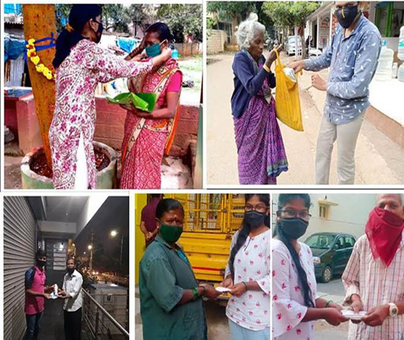

Social Outreach Programme
Class: III BCA (A,B,C,D,E) & B.Sc[CSMS/CSME/PME/MSE/PMCS]
Places Visited:
Student were enriched virtually to distribute masks and sanitizers in
their neighbourhood during COVID 19 Pandemic

Students distributing masks and food for the needy in their
neighbourhood